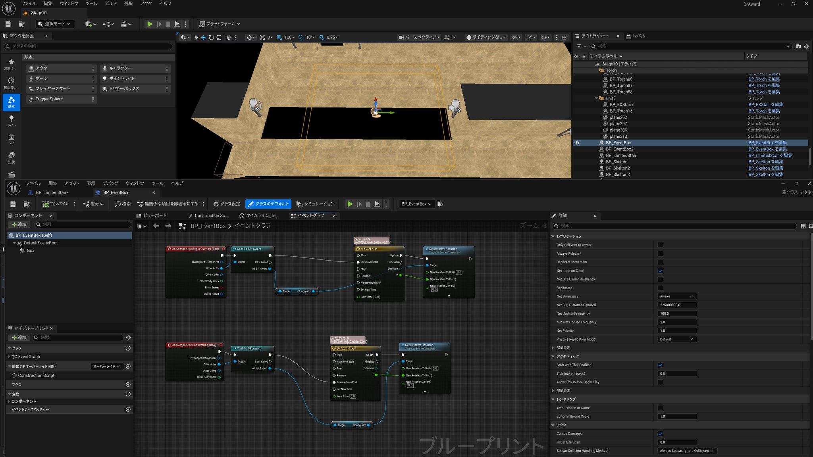
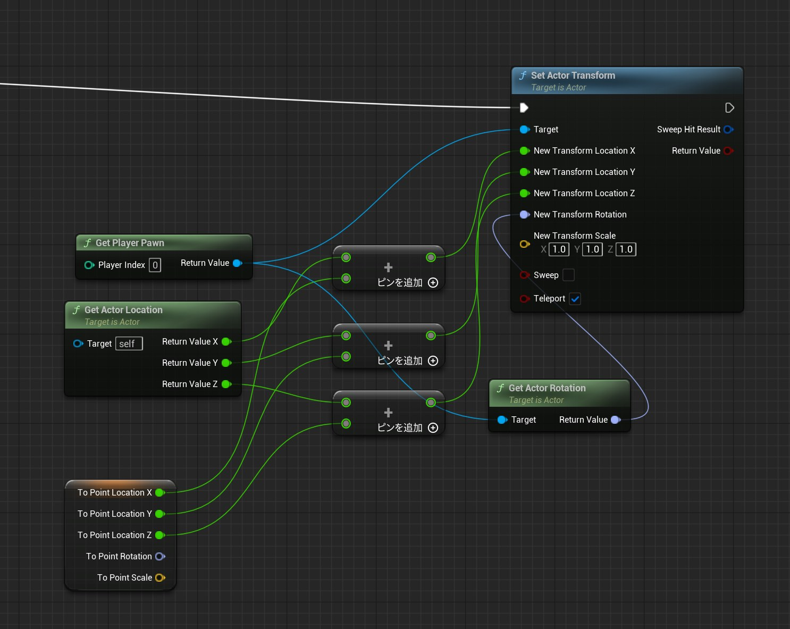
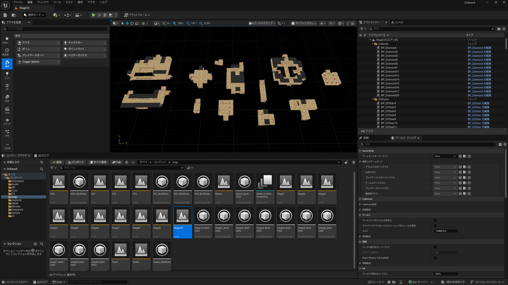

ダンジョンゲーム 「DrAward」
Unreal Engine 5で作った、10フロア＋隠しステージのダンジョンゲームです。ベースにしたのはUdemyの講座で、ゲームの基本システム・3D素材・パッケージ化までの流れはそこから学びました。そのうえで、講座には無いギミック——カメラゾーンとEX階段——を自分で設計・実装し、10フロアぶんのレベルを構成しています。ツールを独学し、2週間で応用まで持っていった記録です。
出典：Udemy「作って覚えるアンリアルエンジン【Unreal Engine 5】〜ダンジョンゲーム編〜」（講座ページ）
講座由来：ゲームの基本システム（キャラクター操作・基本ギミック・UIの土台）、3D素材一式、パッケージ化の流れ。
自分で設計・実装した部分：10フロアぶんのレベルデザイン／カメラゾーン（BP_EventBox）／EX階段（BP_EXStair・ワープと隠しステージ）。

見えないゴールを、カメラで指し示す
このゲームの俯瞰カメラは、フロア全体を見渡せる代わりに、遠くのものが画面に入りません。あるフロアでは、穴に隔てられた向こう側にゴールがあり、俯瞰のままではプレイヤーからゴールが見えない——つまり「どこを目指せばいいのか分からない」状態が生まれていました。
そこで作ったのがカメラゾーンです。特定のエリアに入った瞬間だけ、カメラが俯瞰からプレイキャラクターの目線に近い位置まで降りる。すると視界の奥にゴールの扉が入り、「あっちだ」と画で伝わる。エリアを出れば俯瞰に戻ります。レベルデザインとカメラ演出を連動させた視線誘導です。映像でやってきた「何を見せるか」という判断を、ゲームの仕組みに翻訳した最初の例になりました。
B10F。ゾーンに入るとカメラが降り、奥の青いゴール扉が視界に入る（本編 4:11〜）。
Blueprint — スナップさせず、滑らかに寄る
実装はBP_EventBox。判定ボックスへの侵入（On Component Begin Overlap）をトリガーに、Timelineでカメラの回転を補間し、SpringArmの相対回転を書き換えます。退出時（End Overlap）は同じTimelineを逆再生して俯瞰へ戻す。Timelineを挟んでいるので、カメラは瞬間的にスナップせず、滑らかに寄って滑らかに戻ります。気持ちよさは補間で決まる——これは映像のカメラワークと同じ話です。

BP_EventBox のイベントグラフ。Overlap → Cast To BP_Award → Timeline → Set Relative Rotation（SpringArm）。
一方通行の階段では、作れない地形があった
講座の階段は「そのフロアのゴール」専用で、次のレベルを読み込んだら後戻りできない一方通行の仕様でした。これだとレベルデザインの自由度が足りない。そこで、既存の階段とは別にEX階段（BP_EXStair）を自作し、ひとつのBlueprintで2つの用途を賄えるようにしました。
- ワープ階段：同じフロア内の離れた場所へプレイヤーを転送する。
To Point Location（ワープ先の座標）を現在位置に加算し、Set Actor Transform（Teleport: ON）で移動。Directionで、階段から出るときの方角を分岐させています。 - 隠しステージへの階段：正規ルートから外れた階段に入ると、別レベルへ移動する。
Iswarp（Boolean）でどちらの挙動をとるかを切り替えています。
隠しステージ側の流れは、進入を検知したら操作を止め（Disable Movement）、ローディング表示を出し、Delayを挟んでからレベルをアンロード／ロードし、到着後に操作を戻す（Walking に復帰）——というレベルストリーミングでの移動です。ロード中に操作が効いてしまう事故を防ぐため、移動モードの制御を明示的に挟んでいます。

ワープ処理の実装。現在位置に To Point Location を加算して Set Actor Transform（Teleport: ON）。
Hidden Stage — 設計どおりに動いたか
上のBlueprintが実際にどう動くかが下の映像です。B5Fで正規ルートではない階段に入る → ローディング → 照明の色が一変したお宝部屋（ダイヤが3個から6個に増える）→ B6Fへ復帰。設計と挙動を並べて見ると、Blueprintのどのノードが画面上のどの瞬間に対応しているかが分かります。
隠しステージの一連の流れ（19.9秒）。EX階段 → ロード → お宝部屋 → 復帰。
このEX階段はBP_EXStair4〜11 と複数フロアに配置して使い回しています。ひとつ作れば置くだけで機能するパーツにしておく、という発想は、後のレベル構成の速度に直結しました。
ギミックを覚えたら、あとは並べて遊ばせる
10フロアぶんのレベルは、講座で作り方を覚えたギミックと自作のギミックを組み合わせて、自分で構成しました。感覚としてはマリオメーカーに近い——「この仕掛けをここに置いたら、プレイヤーはどう動くか」を考えながら並べていく作業です。Stage10単体で446アクタ、mapフォルダには10フロア＋EXステージを含む34アセットが並んでいます。

UE5エディタ。Stage10のレベル全景（446アクタ）と、10フロア分のマップアセット。
- 形式
- ダンジョンゲーム（10フロア＋隠しステージ）／Unreal Engine 5
- 制作期間
- 2024年4月末〜5月11日公開（約2週間）
- ベース
- Udemy「作って覚えるアンリアルエンジン【Unreal Engine 5】〜ダンジョンゲーム編〜」（基本システム・3D素材・パッケージ化）
- 自作部分
- 10フロアのレベルデザイン／カメラゾーン（BP_EventBox）／EX階段（BP_EXStair・ワープと隠しステージ）
- 規模
- Stage10単体で446アクタ／mapフォルダに34アセット
- 公開
- 2024年5月11日（プレイ映像をYouTubeで公開）